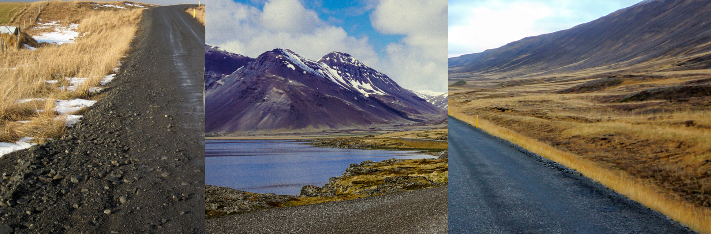
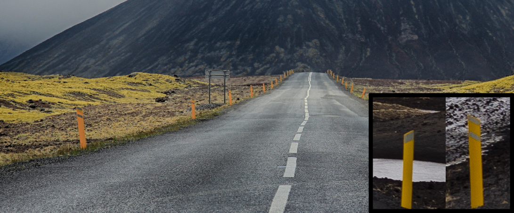
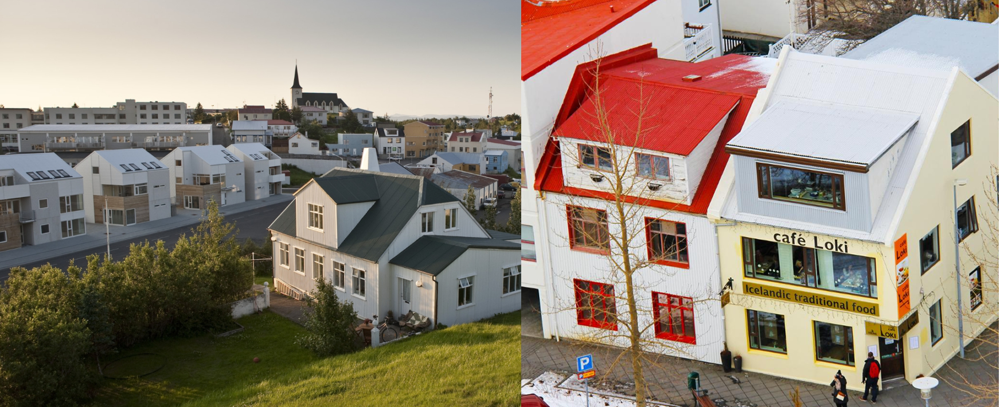

Bagaimana Membedakan
- Domainnya adalah .is
- Ada tonggak kuning(by Geotips )
- Hanya 1% dari tanahnya yang dapat ditanami, dan tanahnya berwarna hitam secara keseluruhan.
- Sebagian besar tanaman adalah lumut dan rumput jarum( アイスランドの地質学的自然環境学的特質について - 名古屋学院大学論集 人文・自然科学篇)
- Medan ini terbentuk dari lava dan memiliki sungai dan lahan basah yang tidak beraturan.
- "ð" hanya digunakan di Kepulauan Faroe dan Islandia
- Perhatikan bahwa ada garis biru tidak di sisi kiri pelat nomor.
Tanda-tanda yang dapat Anda temukan


Medannya tercipta dari lava, tanahnya berwarna hitam, dan hanya rumput jarum yang tumbuh liar. Karena sifatnya, terdapat sungai dan lahan basah yang tidak beraturan, dan sungai dengan tepian yang lurus hampir tidak ada.


Di Islandia yang dingin, ada banyak jendela yang memungkinkan sinar matahari masuk untuk menghangatkan ruangan . Selain itu, tidak seperti di Skandinavia, dinding dan atap kayu tampak hampir tidak ada, karena lingkungannya tidak memiliki pepohonan ( アイスランドの住宅から学ぶ北欧住宅のつくり方).

Rambu penyeberangan berwarna kuning.Namun, Anda mungkin hanya akan menemukan beberapa di luar pusat kota.

Komentar